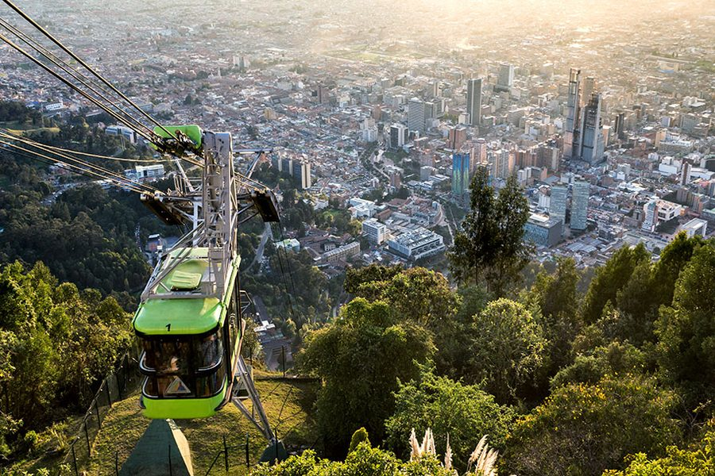
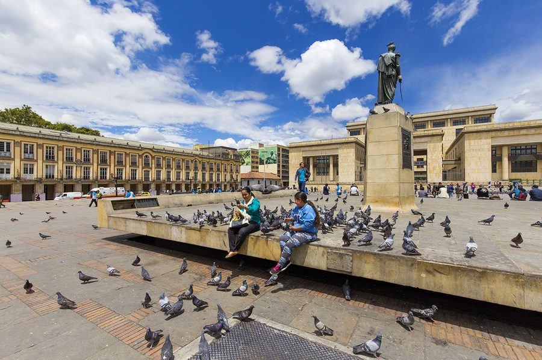

📍 Dag 1 op één blik — Aankomst
📍 Dag 2 op één blik
💵 Geld Afhalen — Davivienda Bank
De Davivienda is de beste plek in Bogotá om pesos op te nemen zonder commissie. Maximum €400 (2.000.000 pesos) per keer. Neem ook je dollars mee ($300) voor wisselkantoren later onderweg.
🚡 Monserrate — Panorama over Bogotá

Beklim de heilige berg per kabelbaan (€5,50 p.p. retour) voor het beste panorama over de uitgestrekte hoofdstad. Op de top: kerk, restaurants en uitzicht tot de horizon. In de voormiddag gaan om rijen te vermijden.
Tips voor Monserrate
Beste tijdstip: Voormiddag — minder rijen en wolken. Weekends zijn drukker dan doordeweeks.
Alternatieven: Je kan ook wandelen (gratis) maar dat is steil en fysiek zwaar — zeker op dag 2 na aankomst. Kabelbaan is de beste optie.
Op de top: De Señor Caído kerk, fototerras, restaurants (duurder dan beneden) en verkopers van typische Colombiaanse snacks.
Zonsondergang: De zonsondergang is prachtig, maar dan is het drukker en kouder.
- Prijs
- €5,50 p.p. retour
- Hoogte top
- 3152 m
- Duur
- 1,5–2 uur totaal
- Tip
- Neem een warme laag mee — bovenaan is het frisser dan in de stad
🚶 Free Walking Tour — Historisch Centrum

Drieuurse gratis wandeling door het historische centrum met een lokale gids. Ontdek La Candelaria, het Bolivarplein, de kathedraal en de koloniale architectuur. Betaal een fooi naar tevredenheid.
📍 Dag 3 op één blik
🎨 La Candelaria & Jardín Botánico
De oudste wijk van Bogotá — kleurrijke koloniale gebouwen, straatkunst van internationaal bekende kunstenaars, kleine galeries en cafeetjes. Of bezoek de Botanische Tuin voor Colombiaanse flora.
Wat te zien in La Candelaria
Museo del Oro: Het Goudmuseum is een van de beste musea van Zuid-Amerika. Collectie Muisca goud, pre-Colombiaanse kunst. Kleine inkom.
Plaza de Bolívar: Het historische centrale plein — kathedraal, Capitolio Nacional, Liévano-paleis. Vrij toegankelijk.
Straatkunst: La Candelaria heeft legale straatkunst overal. Bekende namen: Stinkfish, Toxicómano, os Gemeos (Braziliaans duo). Wandel gewoon door de wijk.
Jardín Botánico: 19 hectare met 4500 planten-soorten waaronder orchideeën. Rustig en aangenaam na het drukke centrum.
🍴 Free Food Tour — Proef Bogotá

Een geleide culinaire wandeling door Bogotá. Proef typische Colombiaanse gerechten en snacks: arepas, empanadas, cholado, pandebono en meer. Reken ±€10 voor het eten.